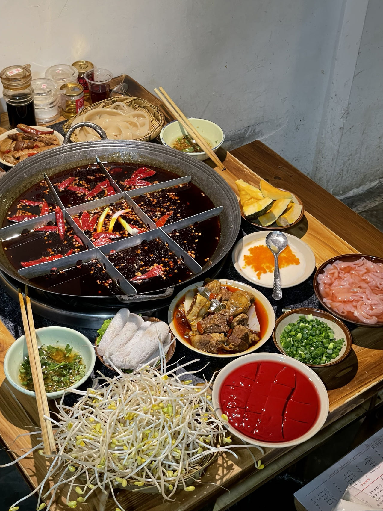
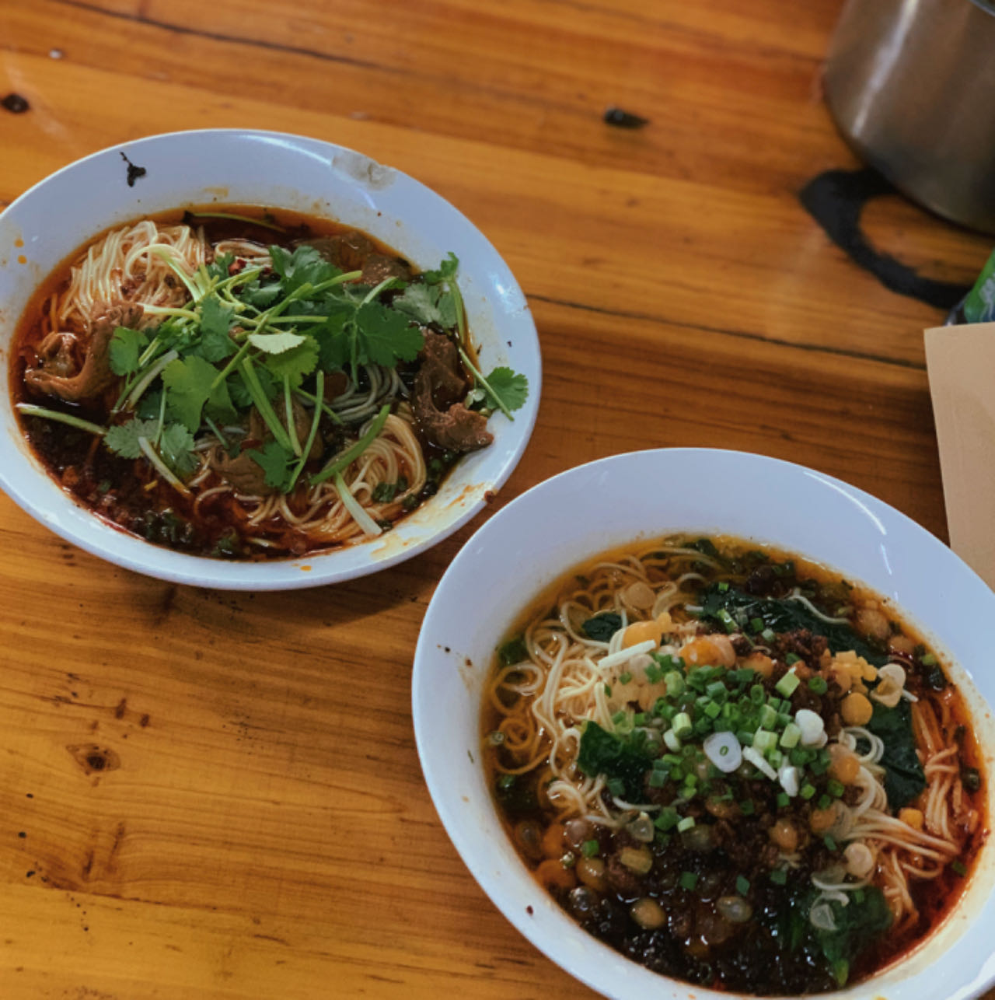
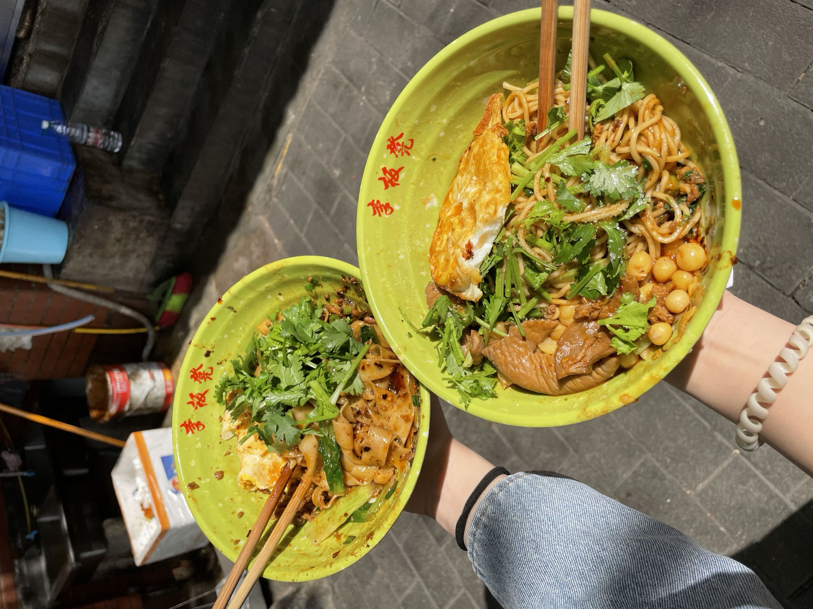

Sichuan Cuisine
Beef is well known in this part of the country, and wheat and rice alternate. Familiar in the US are these regional dishes: hot and sour soup, hot and spicy cucumber salad, mapo tofu, and Sichuan noodles. Expect chili peppers with everything, or maybe the numbing taste of the non-chili red peppercorns.
Hot Pot
Hot pot or hotpot, also known as steamboat, is a dish whereby a heat source placed on the dining table keeps a pot of soup stock simmering, and a variety of Chinese foodstuffs and ingredients are served beside the pot for the diners to put into the hot stock.
Chongqing Noodles
Chongqing noodle dishes are typically spicy and prepared using a variety of spices, seasonings, and sauces. Sichuan pepper is often used in the dish's preparation. Myriad meats and vegetables are also used in its preparation.
 